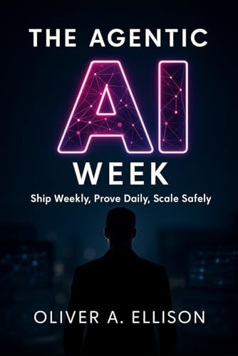

Book
The Agentic AI Week
Ship Weekly, Prove Daily, Scale Safely
Oliver A. Ellison
Most teams do not lack ideas. They lack a cadence that produces proof: small weekly ships, daily evidence they work, and rails that keep speed, accuracy, and cost inside bounds.
The book is a field guide for leaders and builders putting agents into real workflows: a working definition of an agent, traces and receipts that survive audit, and a 30-day path from pilot to proof an operator can live with.
Related systems work lives in the Project Gallery.